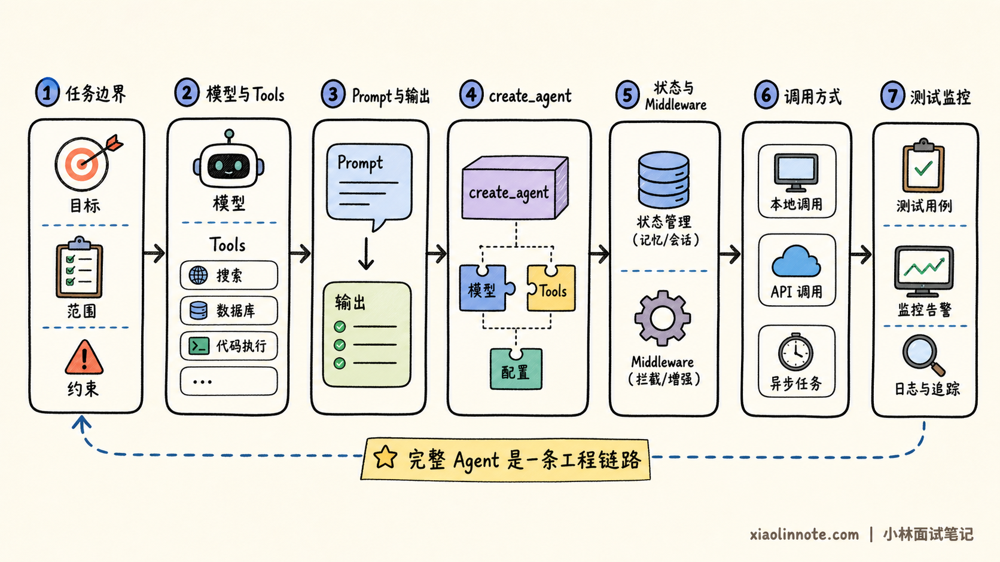
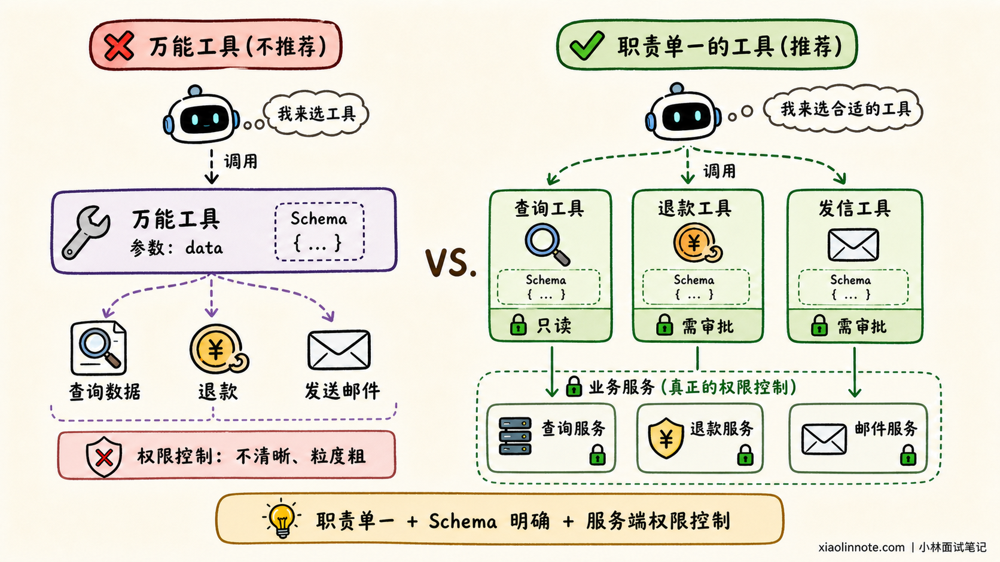
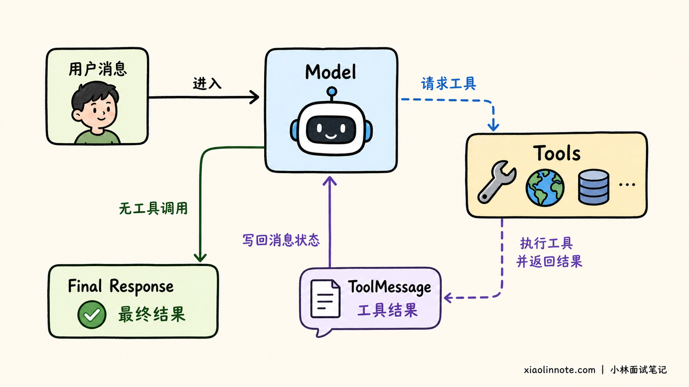
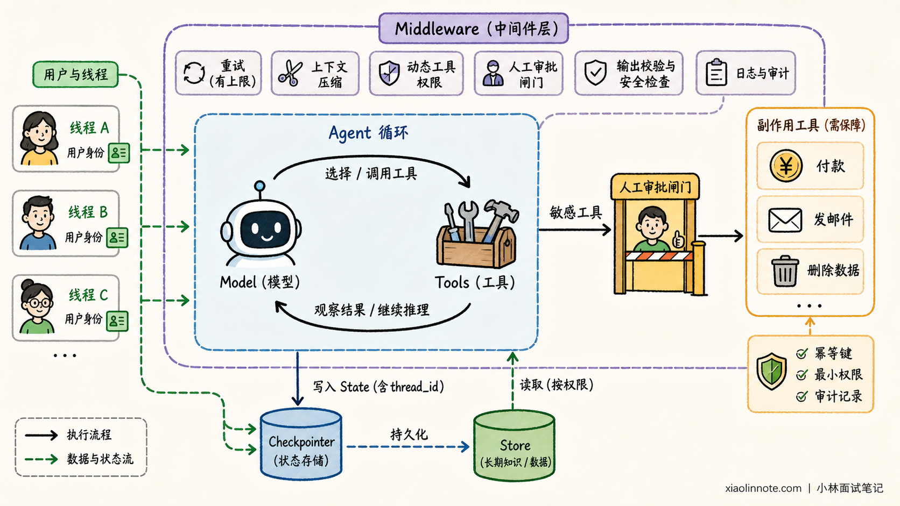
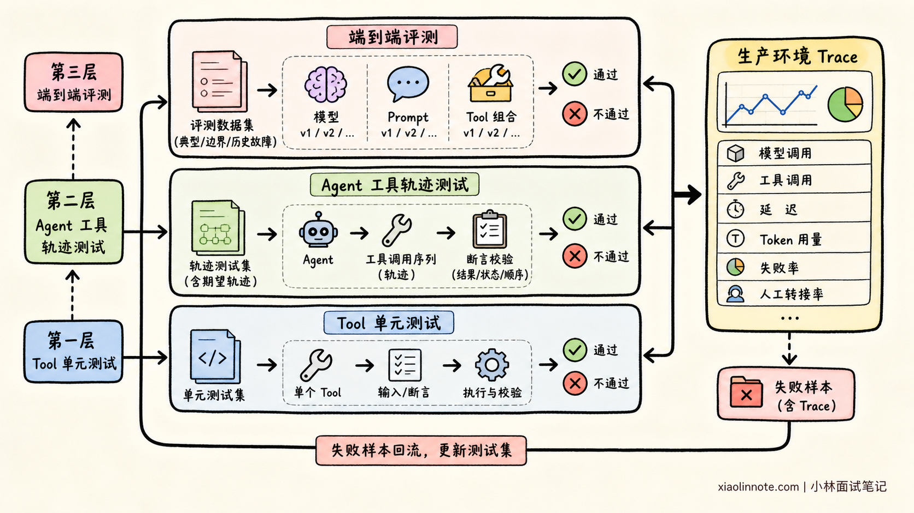

使用 LangChain 构建 Agent 的核心步骤是什么？
👔面试官：如果让你用 LangChain 构建一个完整的 AI Agent，你会怎么做？
🙋♂️我：选择一个大模型，写好 Prompt，再接几个工具就完成了。
👔面试官：那只是能运行的 Demo。任务边界、工具权限、状态恢复、结构化输出和测试监控怎么办？
🙋♂️我：可以使用 AgentExecutor，网上很多示例都是这么写的。
👔面试官：那是旧版常见路径。LangChain v1 新项目应该从 create_agent 开始，并理解它底层的 LangGraph 运行时。
🙋♂️我：那把模型和工具传给 create_agent，本地能回答一次问题，应该就可以上线了。
👔面试官：能跑通不等于完整。状态怎么恢复，危险工具怎么审批，调用轨迹怎么测试，线上错误又怎么定位？
这道题考察的不是几行初始化代码，而是你能否把 Agent 从需求定义一直做到可测试、可观测和可上线。
💡 简要回答
我通常分七步构建 LangChain Agent。
第一，明确任务边界，包括 Agent 能做什么、不能做什么、何时结束，以及什么结果算成功。
第二，选择支持所需工具调用和结构化输出能力的模型，并把数据库、搜索和业务 API 封装为职责单一、Schema 清晰的 Tools。
第三，使用 system_prompt 约束角色、工具使用规则和失败策略；如果结果还要交给程序处理，则使用 response_format 定义结构化输出。
第四，通过 create_agent 组装模型、工具、提示词和输出格式。它底层使用 LangGraph，在模型判断、工具执行和工具结果回传之间循环。
第五，补充状态与安全能力。使用 Checkpointer 按 thread_id 保存当前线程状态，使用 Store 管理跨线程信息，通过 Middleware 添加重试、摘要、权限控制和人工审批。
第六，根据场景选择同步、异步或流式调用，并设置超时、并发和取消策略。
第七，先单测 Tool，再测试 Agent 的工具选择与调用轨迹，最后通过 Trace 观察模型调用、工具参数、耗时、Token 和异常。
📝 详细解析
什么才算完整 Agent？
模型成功调用一次天气工具，只能说明 Demo 跑通了。真正进入业务后，我们先要知道它能做什么、不能做什么；模型选中工具后，还要检查参数是否正确，失败或重复调用会不会带来副作用。
流程跑得更久时，新的问题又会出现：会话中断后能否恢复，最终结果能否稳定进入业务系统，线上出错后能不能复现？因此，完整 Agent 不是一次模型调用，而是一条从任务设计、能力接入、运行控制走到测试监控的工程链路。

第一步：明确任务边界
构建 Agent 的第一步不是选择模型，而是定义任务。
例如订单客服 Agent 可以查询订单和解释物流状态，但不能自行退款；订单不存在、身份验证失败或用户要求高风险操作时，必须转人工。最终输出需要包含答复、订单状态和是否转人工。
怎么把边界说清楚？先定义 Agent 的目标和允许执行的动作，再划出禁止动作与权限边界。接下来还要约定什么算成功、什么算失败、什么时候停止，以及哪些情况必须转人工。
这些答案会继续决定后面的工具、Prompt 和测试用例。边界一旦模糊，模型就只能猜测什么行为算正确，后面再精细的工程配置也补不回来。
第二步：选择模型与 Tools
模型需要支持项目所需的工具调用、结构化输出和上下文长度。模型负责判断和规划，真正访问数据库、搜索资料、发送消息的动作应该由 Tool 执行。
Tool 为什么要尽量小而清楚？因为模型主要依靠名称、描述和参数 Schema 来判断能不能调用。一个工具同时负责查询、退款和通知，模型就更容易选错动作；参数没有类型与范围约束，运行时也很难拦住错误输入。
所以，Tool 应先做到职责单一、名称清楚、输入输出容易理解。到了执行阶段，服务端还要重新检查身份与权限；只要工具会修改外部状态，就必须补上幂等和审计。前一层帮助模型「选对」，后一层保证系统「做得安全」。
from langchain.tools import tool
# 装饰器会把函数名、docstring 和类型注解转换成工具说明
@tool
def lookup_order(order_id: str) -> dict[str, str]:
"""根据订单号查询订单状态，只读，不修改订单。"""
# 真实项目应在这里调用经过身份校验的订单服务
return {"order_id": order_id, "status": "已发货"}
工具描述中的「只读」很重要。模型会根据名称、描述和 Schema 选择工具，业务服务则负责真正的权限控制。Prompt 中写「禁止退款」，不能替代退款接口本身的身份校验。

第三步：约束行为与输出
system_prompt 应说明角色、目标、信息边界、工具规则和失败策略。例如：回答订单状态前必须查询工具，不能猜测数据库中不存在的信息，高风险请求必须转人工。
如果输出只供人阅读，自然语言即可；如果结果还要进入前端、工单或后续工作流，应该定义结构化输出：
from pydantic import BaseModel, Field
class SupportReply(BaseModel):
# response_format 会按这三个字段校验 Agent 的最终结果
answer: str = Field(description="给用户的简洁答复")
order_status: str | None = Field(default=None, description="订单状态")
needs_human: bool = Field(description="是否需要转人工")
结构化输出可以约束字段和类型，但不能保证业务事实正确。事实仍必须来自可信工具，权限仍必须由业务服务控制。
第四步：组装 Agent
LangChain v1 推荐使用 create_agent：
from langchain.agents import create_agent
# 将模型、工具、行为约束和输出 Schema 组装成 Agent
agent = create_agent(
model="openai:gpt-5.4-mini",
tools=[lookup_order],
system_prompt=(
"你是订单客服。回答订单状态前必须调用查询工具；"
"不得猜测，无法处理时设置转人工。"
),
response_format=SupportReply,
)
# messages 是 Agent State 的默认输入字段
result = agent.invoke({
"messages": [{"role": "user", "content": "订单 A100 到哪了？"}]
})
# 结构化结果已经通过 SupportReply 的字段校验
reply: SupportReply = result["structured_response"]
底层执行流程是：
用户消息 -> 模型判断
模型判断 -> 工具调用 -> ToolMessage -> 模型继续判断
模型判断 -> 最终结果（没有工具调用）
模型没有工具调用时，Agent 输出最终结果；模型请求工具时，LangGraph 运行时执行工具并把结果写回消息状态，再让模型继续判断。

旧资料中的 create_tool_calling_agent 和 AgentExecutor 仍可能出现在存量项目中，但 LangChain v1 新项目应优先使用 create_agent。
第五步：补齐状态与安全
Agent 能跑通之后，还要处理状态、故障和高风险动作。
短期状态通常保存在 Agent State 中。配置 Checkpointer 并稳定传入 thread_id 后，同一线程可以续接之前的消息和执行状态，流程中断后也有机会恢复。
跨线程的用户偏好或长期事实则放入 Store，通过 namespace 和 key 隔离不同租户与用户。Checkpointer 和 Store 的作用不同，不能因为二者都能落盘就混为一谈。
接下来，重试、摘要、权限和审批应该写在哪里？它们往往会同时影响多个模型或工具调用，如果散落在每个节点中，规则很快就会重复。Middleware 就是用来承接这类横切逻辑的。
例如，模型或只读工具临时失败时，可以在调用周围做有上限的重试；上下文过长时，可以在模型调用前压缩历史；用户权限变化时，可以动态隐藏工具。遇到敏感动作，Middleware 还能在工具执行前暂停等待审批，并在模型输出后补充格式或安全检查。

付款、发邮件、删除数据等工具必须具备幂等、最小权限和审计能力。自动重试不能导致重复扣款或重复发信。
第六步：选择调用方式
调用方式需要与产品形态匹配：
| 调用方式 | 适用场景 |
|---|---|
invoke |
短任务、后台任务、等待最终结果 |
| 异步调用 | 并发 I/O、异步 Web 服务 |
stream |
长任务，需要展示 Token、步骤或工具进度 |
流式输出改善的是等待体验，并不会自动缩短工具执行时间。超时、取消、并发限制和缓存仍要单独设计。
第七步：测试与监控
Agent 输出具有概率性，所以测试不能只比较最终文本。
第一层测试 Tool。检查正常输入、非法参数、权限错误、超时和幂等性。Tool 是相对确定的业务代码，应该优先做到稳定。
第二层测试 Agent 轨迹。检查是否选择正确工具、参数是否正确、是否发生越权调用，以及结构化输出是否符合 Schema。
第三层做端到端评测和线上监控。把典型问题、边界案例和历史故障整理成数据集，对比模型、Prompt 和 Tool 版本；上线后通过 Trace 观察模型调用、工具调用、延迟、Token、失败率和人工转接率。

上线前检查什么？
上线前可以快速检查：
- 任务和停止条件是否明确。
- Tool 是否职责单一，并在服务端校验权限。
- 有副作用的操作是否具备幂等和审批。
- Checkpointer 与 Store 是否使用持久化实现并做好用户隔离。
- 是否设置超时、重试上限、并发和成本预算。
- 是否覆盖工具、轨迹和端到端评测。
- 是否能够追踪一次失败运行的完整调用链。
🎯 面试总结
用 LangChain 构建完整 Agent，可以沿着「边界、能力、约束、组装、状态、交互、验证」回答。
先明确 Agent 的目标、权限和停止条件；再选择模型，把外部能力封装成 Schema 清晰、职责单一的 Tools；通过 system_prompt 约束行为，通过 response_format 固定业务输出；随后使用 create_agent 组装，底层由 LangGraph 管理模型与工具之间的循环。
工程上还要配置 Checkpointer 和 Store，使用 Middleware 加入重试、摘要、权限控制和人工审批，并根据产品需要选择同步、异步或流式调用。最后既要测试最终结果，也要测试工具轨迹，并通过 Trace 持续观察线上行为。
能把这七步讲清楚，说明你构建的不是一个只能演示的 Agent，而是一个有边界、有状态、可测试、可观测的业务系统。
📚 参考资料
- LangChain 官方文档：Agents
- LangChain 官方文档：Tools
- LangChain 官方文档：Structured Output
- LangChain 官方文档：Middleware
- LangChain 官方文档：Short-term Memory
- LangChain 官方文档：Long-term Memory
- LangChain 官方文档：Streaming
- LangChain 官方文档：Agent Evals
- LangSmith 官方文档：Observability
- LangChain 官方文档：v1 迁移指南